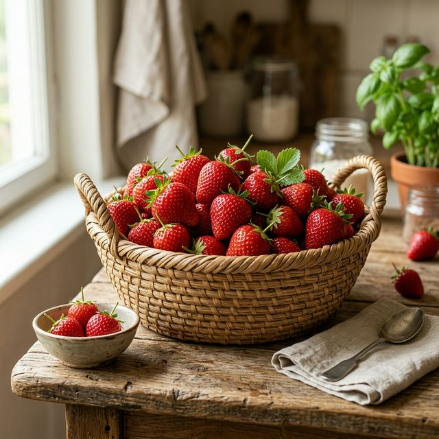

苗栗大湖採草莓之旅，享受酸甜滋味與田園放鬆時光。
每年冬天最令人期待的盛事！我們邀請您來到台灣草莓的故鄉——苗栗大湖。 在這裡，您將穿梭於結實纍纍的草莓園中，親手摘下最新鮮、最碩大的果實。 本次活動更特別安排了果醬 DIY、草莓甜點品嚐等環節，讓這趟旅程不僅好玩，更充滿甜蜜回憶。
按重量計價，想吃多少採多少！
品嚐在地特色草莓大福與冰沙。

精心規劃的半日遊行程，為您帶來滿滿回憶
於指定地點集合，由專業農夫為大家解說草莓品種、生長過程及正確的採摘技巧。
發放採果籃與剪刀，進入專屬果園區開始採摘。尋找最大最紅的草莓！
達人教學，使用親手採下的新鮮草莓，製作美味又好看的草莓雪莓娘甜點。
享用我們準備的草莓飲品，與親友留下美好的出遊合影，滿載而歸。
每週六、日 (即日起至 4 月底)
上午場 09:00 | 下午場 14:00
苗栗大湖觀光草莓園示範區
名額有限，立即鎖定您的專屬採果時光。